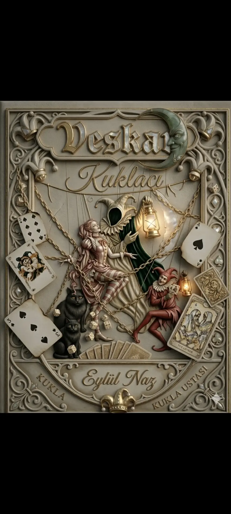
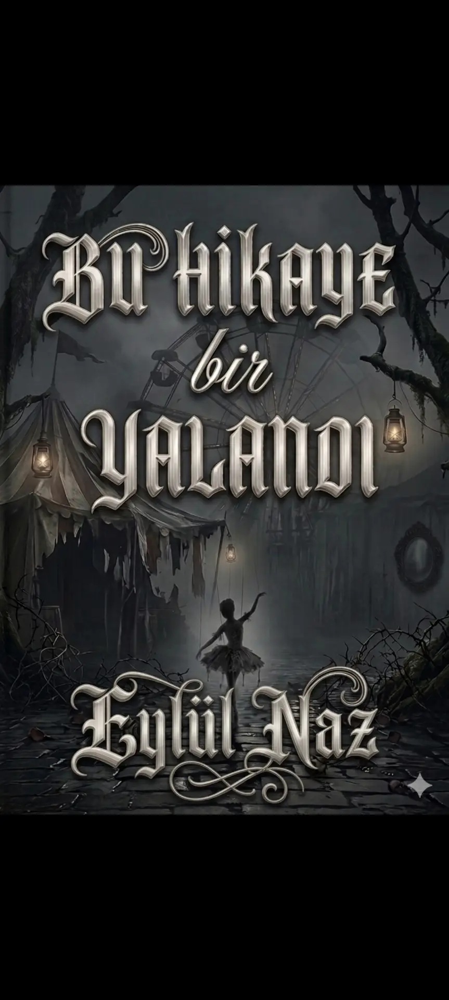

VESKAR
📖 Özet
Ailemin çizdiği bir hayata mahkûmdum. Sonra kader beni onunla karşılaştırdı. O an her şeyin düzeleceğine inanmıştım.
Yanılmışım. Çünkü bazı insanlar hayatına ışık olmak için değil, seni karanlığa sürüklemek için girer.
Okumak için @eylulnaz24

Bu Hikaye Bir Yalan
📖 Özet
Babası gizemli bir şekilde ölen Arin, bu ölümü araştırmaya başlar. Annesini ve ikiz kardeşini bulmak için yola çıkan Arin onlara ulaşabilmek için bu yolda herkesi yok etmeye hazır..
Okumak için @eylulnaz24
İletişim
Instagram: @eylulnaz_811
Wattpad: @Eylulnaz24